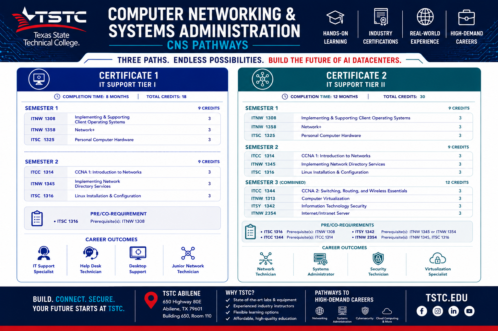
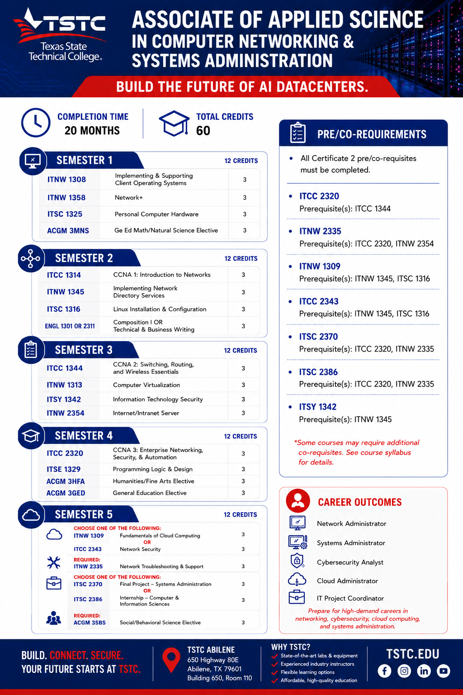

Everything from your welcome packet — broken into small, do-able steps. Take them one at a time. You've got this.
Nine steps from "just applied" to "first day ready." Tap a node to mark it done — the wire lights up as you go.
All of these live in Workday at login.tstc.edu. Open only the card you're working on right now.
The CNS program at Abilene is a hybrid program — a blend of in-person and online coursework designed to give you real hands-on experience with the flexibility to get things done.
Attend classes on campus on a set schedule, typically 1–2 days per week.
Complete assignments, discussions, and some instruction online — on your schedule.
Face-to-face time with instructors and classmates to enhance learning and teamwork.
A consistent weekly rhythm of in-person and online activities keeps you on track.
Just the essentials to get going. One required item, a couple of optional kits, and your first-semester books are already covered.
Support inside and outside the classroom — here's what you can lean on.
Every student starts the same way — Semester 1 is identical across all three paths. Where you go from there depends on how far you want to take it. You can always keep going.
Your fastest entry into IT. Two semesters and you're job-ready with foundational networking and PC skills.
Builds on Certificate 1 with CCNA networking, Linux, virtualization, and security — stepping into higher-tier roles.
The full degree. Five semesters covering enterprise networking, cloud, security, server admin, and a capstone or internship.
Certificate 1 exits after Semester 2 · Certificate 2 continues through Semester 3

Build the future of AI datacenters — all five semesters, 60 total credits

Real computers, networking gear, and servers built to help you succeed. Come use it.
All Mastery Assessment Labs must be completed in the CNS Computer Lab. You're responsible for scheduling enough lab time during posted hours to finish them.
Plan ahead — get your lab time on your calendar early so assessments never sneak up on you.
Abilene has become one of the most exciting tech towns in Texas. No experience needed — we start you at the bench and build you into the pro employers are fighting to hire.
Never opened a computer? We'll show you, piece by piece.
Real enterprise networking gear, hands-on.
Stand up Windows Server & Linux on real rack hardware.
Crimp copper and learn to terminate fiber optic.
Capture-the-flag cybersecurity challenges — fun & real skills.
Stuck on a lab or assignment? We sit down with you.
From help desk to the world's biggest AI buildout — real local employers posting IT & data-center roles:
No question is too small. Your instructors and TSTC support teams are here from day one.